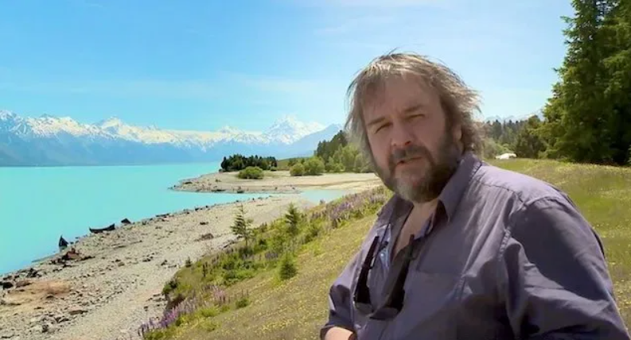
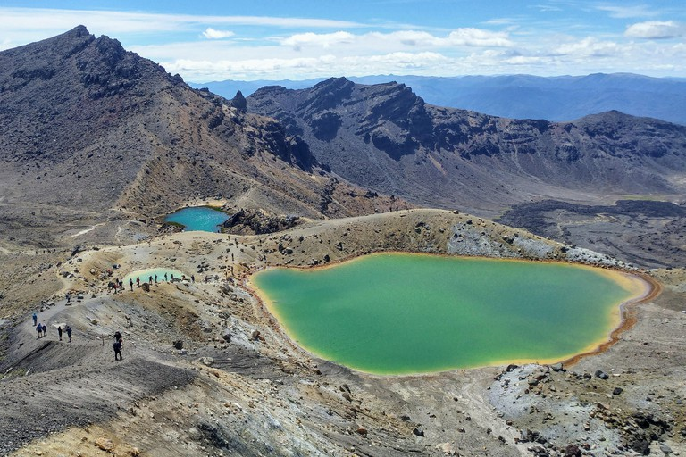

People
- SIR PETER JACKSON – PUKERUA BAY
- SIR EDMUND HILLARY – AUCKLAND
- DAME KIRI TE KANAWA – GISBORNE
- LORDE – NORTH SHORE
- SIR ERNEST RUTHERFORD – BRIGHTWATER
- NEIL FINN – TE AWAMUTU
- STEVEN ADAMS – ROTORUA
- FLIGHT OF THE CONCHORDS – WELLINGTON
Cities

- Auckland
- Christchurch
- Wellington
- Hamilton
- Tauranga
- Lower Hutt
- Dunedin
- Palmerston North
Landmarks
- Moeraki Boulders
- Craters of the Moon
- The Sky Tower
- Huka Falls
- Tane Mahutu
- The Beehive and Parliament House
- One Tree Hill
- Tongariro Crossing